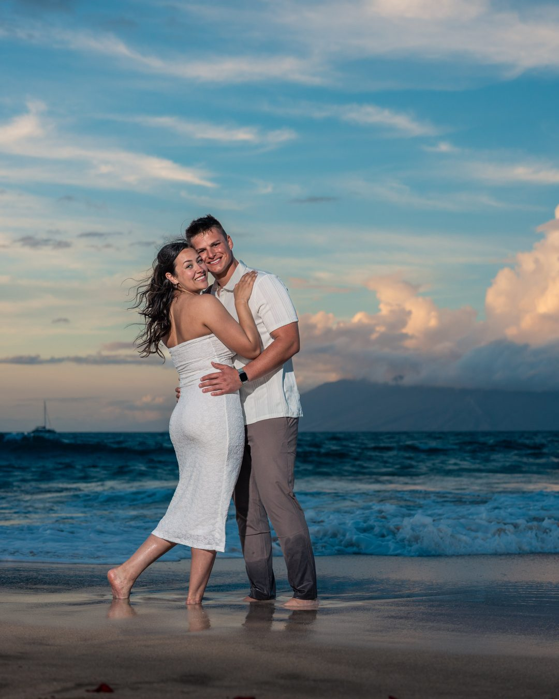

Photography for Four Seasons Maui Guests
We photograph near the Four Seasons every evening at sunset — usually on a quieter beach a short drive from the crowds on Wailea Beach. One all-inclusive price, booked directly with our family.
A short drive leads to golden light, quiet sands, and a backdrop that belongs entirely to you.

A quieter beach, a short drive from the resort.
The Four Seasons Resort Maui sits on fifteen oceanfront acres along the golden crescent of Wailea Beach — one of Maui’s most beautiful, and, at sunset, one of its busiest. Rather than work around the evening crowds, we usually meet a short drive away, on a quieter stretch of sand where the light is just as golden and the view behind you is yours alone.
For guests staying at the Four Seasons, it’s a short drive. Spend your afternoon by the adults-only serenity pool or the spa, get ready in your own room, and meet us as the light turns gold. Prefer to stay on Wailea Beach right in front of the resort? Just ask — depending on the evening and the crowd, we’re glad to talk it through.
Why we recommend booking the session you truly want
We understand that convenience is important. But the quality of your finished photographs—and the experience your family shares while creating them—matters even more. Sometimes that means taking a short drive to one of the locations where we regularly conduct our sessions.
The beach in front of the Four Seasons is not ideal for sunset photography for two fundamental reasons:
- The large rock wall blocks the sunset. The setting sun disappears behind the wall and cannot be included naturally in your photographs.
- The beach becomes crowded at sunset. The number of people makes it difficult to create the quiet, intimate family experience most clients envision.
This is why we recommend choosing the session and location you genuinely want rather than waiting and hoping another time becomes available. Our sunset sessions frequently sell out well in advance.
All-inclusive — with no middle-man markup.
When a photographer is arranged through a resort or concierge desk, a commission is almost always folded into what you pay. We’re different. Wailea Photo is an independent, family-run studio, so you book directly with us — and the price you see is the entire price, with no concierge fee or third-party markup added on top.
Every session is all-inclusive: one flat rate covers the shoot and all of your naturally edited, high-resolution images, delivered in a private online gallery within about 48 hours — no per-image charges and no upsells afterward. And every session is photographed personally by one of the Balters, never an outside contractor.
What guests ask us.
Where do you photograph — right in front of the Four Seasons?
Usually not. Wailea Beach in front of the resort gets very crowded at sunset, so we normally meet a short drive away — on a quieter beach where the light is just as beautiful and the setting is far more private.
Can we photograph on Wailea Beach right in front of the resort?
You’re welcome to request it, and depending on the evening and how busy the beach is, we’re happy to discuss it. Because that stretch can get very crowded at sunset, we usually recommend the quieter spot nearby — but the choice is yours.
Do I have to book through the resort’s concierge?
No. We’re an independent, family-run studio, so you book directly with us at one all-inclusive price. Nothing is added on top — no concierge fee and no commission.
How much is a session, and what’s included?
Every session is all-inclusive: one price, quoted when you book, covers the shoot and every one of your naturally edited, high-resolution images, delivered in a private online gallery within about 48 hours.
We have young children — can we stay closer to the resort?
Yes. For families with toddlers who would prefer to stay closer to the resort, we’ll do our best to accommodate a nearby location. We’ll go over the options — and any resort parking involved — when you book.
What time will we meet?
We photograph around sunset, when the light is at its best, so your exact start time shifts with the season. We’ll confirm the evening’s sunset time and where to meet as soon as you book.